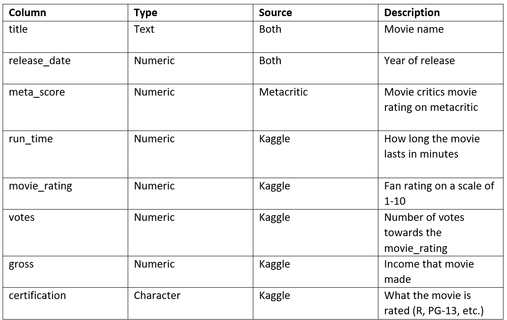
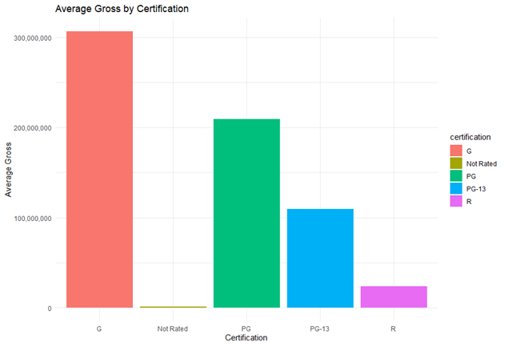
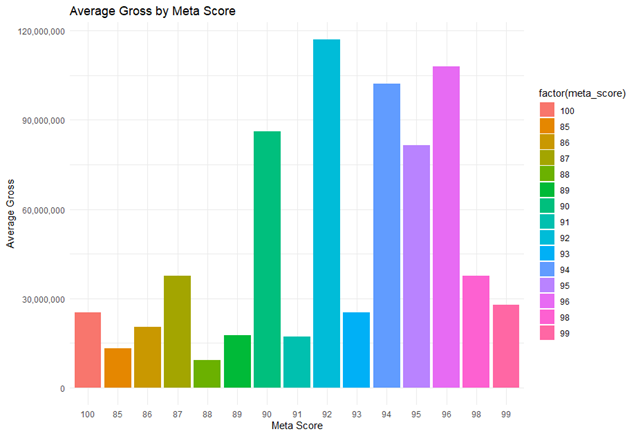
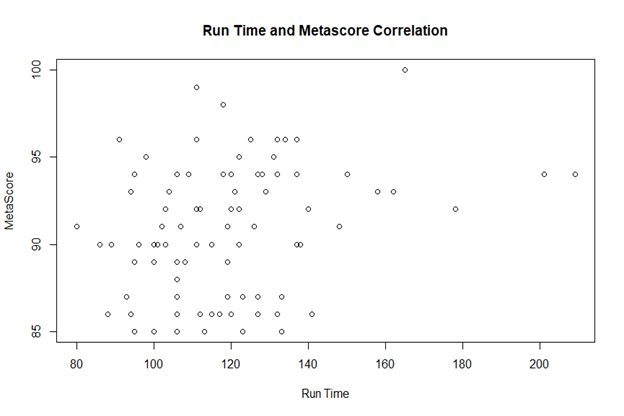

Data Wrangling Project - Completed by Scott Anderson and Jack Eibes in the Fall of 2023
Introduction
We are interested in movie datasets and how gross income and revenue is affected by certain factors. Inside this data we are mainly focused on revenue and ratings. Does the certification of the movie (R, PG-13, PG) affect the gross income of the movie? Maybe the more mature the audience should be, the more gross income the movie obtains. We are also curious if there is a correlation between the gross income and the meta score. Another thing we are going to look at in this is the correlation between run time and meta score. Meta score is movie critics, which is people who are not just ordinary movie watchers.
Data
This project uses two primary sources of data: Metacritic`s movie critic rating and the Kaggle dataset which contains data of movies from 2000-2023. When cleaning our data, we mainly did this inside of Excel as it felt easier to get the correct observations from both of our datasets. Our dataset was merged by title and release_date. Because of this, our merge was a horizontal merge. The code for our merger was: merged_df <- merge(kaggle_df, movies_metacritic_cleaned, by = c("title", "release_date"), all = TRUE). We then saved the merged file as a data frame and then imported the file into a new r script where we do the analysis.
2.1 Review Scores
We collected data from Metacritic, which contained the release year and the critic (meta score) review scores for each movie. and wrote a web crawling script to collect the data from the first 20 pages of Metacritic. This code collected 480 observations. However, when we compared this to our Kaggle dataset, there were only 87 of the same observations between both datasets that had gross income in the Kaggle dataset as well. Getting both the Metacritic dataset and the Kaggle movie dataset to both be 87 observations was done in Excel. We then imported these cleaned csv files into R and merged them.
2.2 Gross Income
Kaggle provided the gross income of the movies. Although there were some of the same observations (title) from both datasets, there were some missing values for gross income within the Kaggle dataset, and we could not use these movies for our merged dataframe. From Kaggle, we collected the title, run time, movie rating, votes, and certification.
2.3 Combining title and release year
Both data sets included the same titles, and the same release year. When we got the movies that had gross income from Metacritic along with the other information needed, the data was in the form of Dec 6, 2023. We cleaned this in excel and made it to where it would match the form of only “2023” like Kaggle had. Since most of the cleaning was done in excel, we had both of our newly cleaned datasets saved as .csv files. We then imported these .csv files into R.
Since the differentiator between both data frames is that they have different columns outside of title and release_date.
Table 1 Data Dictionary
Analysis
Our goal of the project aimed to see if there is a strong correlation between the meta score, user rating, and gross income. Using those results, we want to see if the meta score or user rating is a better predictor of a movie`s sales. We are also curious if the certification (R, PG-13, PG) affects the movie`s gross income. We also wanted to know if there is a correlation between movie rating and meta score. Finally, we wanted to see if there is a correlation between run time and meta score.
3.1 Gross Income by CertificationWe wanted to find out whether the gross income for a movie is affected by the certification. We wanted to do a bar plot for this. Each certification from the data is shown in the bar plot, with gross income shown by the average within that certification. Our hypothesis for this question was that the average would be around the same for each certification. Our dataset isn`t necessarily large and may be skewed because of this.
What we notice here is that the certification rating of “G” has a much higher average gross income than “PG”, “PG-13”, and “R”. There are not nearly enough “Not Rated” movies in our dataset, and it would have been good to get rid of this data. When thinking of reasons as to why the gross income could be this much different, a “G” rated movie is for all ages, and as a kid there were many movies that we watched and enjoyed. Overall, we thought that a bar plot was best for this information and could show the true difference between the average of gross income compared to movie certification.
3.2 Average Gross Income and MetascoreTo find out how the meta score may affect the gross income, we created another bar with each meta score and the respective gross income for that score. Our data had meta scores ranging from 85-100. The reasoning the meta score only goes down to 85 is because when we scraped the first 20 pages from meta critic, the scores went from 100 down, and were not randomized. We had a basic hypothesis for what was going to be the case with this data, which was the higher the meta score the higher the average gross. We were interested in comparing these two due to meta score being a movie critic rating and not an actual fan rating.
What we found when we made a ggplot in R was that the higher the meta score the more likely that the average gross income was higher. This isn`t necessarily surprising as many people look towards critic reviews to determine whether they would like to watch a movie or not. When the scores are from 85-89, there is the lowest average.
Also seen in the bar plot is how the meta score of 100 only has an average gross of around 27,000,000 dollars. This information is skewed as there is only one movie that has a meta critic rating of 100 which can greatly affect this number. Overall the movie critics seem to get their ratings right because of how the average gross income is higher when they also have a higher rating.
3.3 Run Time and MetascoreFor this analysis question we are interested in the correlation between run time and meta score. To be able to do this question we made a correlation plot using R. Our personal opinion was that there most likely wouldn`t be a correlation between this. Movies normally have certain run times which is right around two hours (which can be seen below), which makes a lot of data points outside of this time. This leads to outliers in our data set for this particular analysis.
Here we got a correlation of .26 for the run time and meta score. As you can see, there are some outliers around the 180-to-200-minute mark on the x axis. This trend is more prevalent for run time while meta score does not have any outliers in the data.
Conclusion
In this project, we analyzed three questions that we had regarding movies: gross income compared to certification and meta score, along with how a movies run time can affect the meta score given. In summary, from the analysis questions presented here, we found the following results.
1. Is there a correlation between the gross income that a movie generates and the certification of the movie?There is a strong correlation between the certification of the movie and the gross income brought in by each movie. It does appear that the data may have a little skew due to the high number of R occurrences within the dataset.
2. What does the relationship between gross income and meta score look like?There is a positive relationship between gross income and meta score. Per figure 2, the higher the meta score, the more likely it is that the movie will have a higher gross income.
3. Is there a strong or weak correlation between the run time and meta score for movies?There is a fairly weak correlation between the run time of a movie and the meta score for them. It must be kept in mind that a lot of movies have a similar run time (around 2 hours / 120 minutes). This skews the data towards these figures and leaves us with outliers.
The data presented to you must be taken with a grain of salt. We were hoping that we would be able to get more than 87 movies into our final data set, but we would have been unable to merge with the amount of missing and different data. There are also limitations within our data, the first one being the number of movies within each respective category. For example, there is only four movies that are “Not Rated”, which leads to a heavy skew in the data if only one of these movies has a low or high gross income. Future work on this project would include finding a more complete dataset, where gross income is not missing for some movies. It would also be beneficial to find a dataset with more columns, so we could further analyze certain aspects of a movie with meta score given by Metacritic.
Sources1. https://www.metacritic.com/browse/movie/
2. https://www.kaggle.com/datasets/willianoliveiragibin/10000-data-about-movies-1915-2023